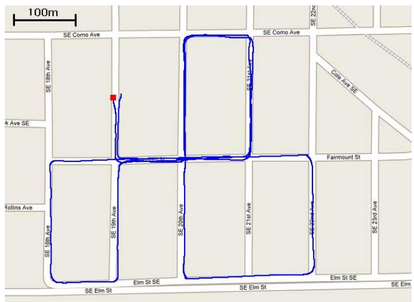
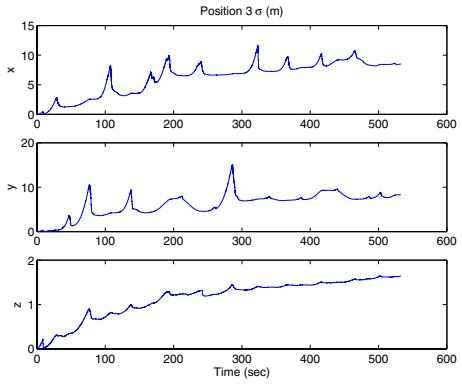

联合估计全部位姿和全部路标。优点是能正确处理变量间的相关性；缺点是「properly treating these correlations is computationally costly」——要算对相关性就贵，所以「在数千个特征的场景里做视觉 SLAM 仍是难题」。
② 仅位姿型（成对图像约束）
只拿两两图像之间的约束来估位姿。两个硬伤：一是「when a feature is seen in multiple images, the additional constraints… are discarded, thus resulting in loss of information」（同一特征被多帧看到时，多出来的约束被丢掉了，信息损失）；二是「when the same image measurements are processed for computing several displacement estimates, these are not statistically independent」（同一批测量被反复用，统计上不再独立）。
③ 多相机位姿窗口型
维护一个位姿滑窗。原文举了 [13]（增广状态 KF 维护位姿窗口）、[14]（联合估全部位姿，但都用两两相对位姿测量）、[16]（Nistér VO，用完就丢路标，不含惯性，且「路标估计和相机轨迹的相关性没被正确处理」）、[17]（VSDF，混合批/递归，有延迟线性化和信息矩阵稀疏两个好处，但有运动模型时复杂度「at best quadratic in the number of features」）。
下一节（0029）的预积分论文里，作者明确写道：「We neglect the effects due to earth's rotation, which amounts to assuming that W is an inertial frame」（我们忽略地球自转的影响，相当于把世界系当成惯性系）。两篇同样是 VIO，一篇用 ECEF（显式建地球自转与重力），一篇把世界系当惯性系直接忽略地球自转。这是两篇论文最重要的对照点——一篇认真考虑了地球在转，一篇干脆假设地球不转。等看到下一节你会更清楚这个反差。
投影之后的新残差 $\mathbf r_o^{(j)}$，维度是 $2M_j-3$。原文说得很干脆：「Since the $2M_j\times3$ matrix $\mathbf H_f^{(j)}$ has full column rank, its left nullspace is of dimension $2M_j-3$」，而且「This residual is independent of the errors in the feature coordinates, and thus EKF updates can be performed based on it」——残差里不再含路标坐标误差，所以可以直接拿去做 EKF 更新了。
原文一句话点破：「The residual $\mathbf Q_2^T\mathbf r_o$ is only noise, and can be completely discarded.」——被 $\mathbf Q_2^T$ 投影掉的那部分纯粹是噪声，直接扔掉；剩下的 $\mathbf r_n$ 是干净的、只关于状态 $\tilde{\mathbf X}$ 的约束。
原图注（Fig. 1）：Some images from the dataset used for the experiment. The entire video sequence can be found at [26].（实验所用数据集中的若干图像；完整视频见 [26]。） 怎么看这张图：这是论文里展示数据集的三张示例图之一，告诉你实验是在真实街道场景里跑的——有房屋、路面、车辆，不是实验室摆拍。它帮你建立「这篇方法真在真实大场景验证过」的直观印象。

原图注（Fig. 2）：The estimated trajectory overlaid on a map of the area where the experiment took place. The initial position of the car is denoted by a red square, and the scale of the map is shown on the top left corner.（估计轨迹叠加在实验区域地图上；车辆初始位置用红方块标出，地图比例尺在左上角。） 怎么看这张图：这是「没有真值怎么验证」的核心一张。把 3.2 km 的估计轨迹叠到真实街道地图上，肉眼看它和街道布局重合得怎么样；红方块是起点。它不证明「误差 10 m」这个数（那是靠别的手段估的），但能直观说明轨迹没飘到离谱。

原图注（Fig. 3）：The 3σ bounds for the errors in the position, attitude, and velocity. The plotted values are 3-times the square roots of the corresponding diagonal elements of the state covariance matrix. Note that the EKF state is expressed in ECEF frame, but for plotting we have transformed all quantities in the initial IMU frame…（位置、姿态、速度误差的 3σ 界；数值为状态协方差对角元的 3 倍平方根。EKF 状态在 ECEF 系，绘图时转到初始 IMU 系，其 x 轴约指南、y 轴指东。） 怎么看这张图：这是 Fig. 3 的 (a) 子图，画的是位置误差的 3σ 界（滤波器自报的置信区间，不是真值）。注意图注说状态原本在 ECEF 系，画图时转到了初始 IMU 系。它和 (b)(c) 一起，是用「滤波器自己报的不确定性」来验证一致性的关键证据。
★ 必须如实说明的两件事
① 本文没有做与 EKF-SLAM 的定量对比实验。对 VSDF 的对比是理论论证，对 [16] 是定性描述——不要替原文补实验。② 数据没有真值：原文写「A GPS sensor was not available during the experiment, and therefore no ground-truth trajectory data exists.」所以验证只能靠两条路：Fig. 2 把轨迹叠地图目测 + Fig. 3 的 3σ 界（滤波器自报的置信区间）。这种「没有真值怎么办」的科研态度，本身就值得你学。
而最自然的下一步，就是下一节（0029）：预积分论文明确把 MSCKF 列为「structureless（无结构）」的滤波代表，并指出它的代价是「processing needs to be delayed… measurements can only be linearized and absorbed once」（处理必须被延迟、每条测量只能被线性化和吸收一次）。这句话正是从「滤波」走到「优化 + 预积分」的教科书级过渡词——我们下一节见。